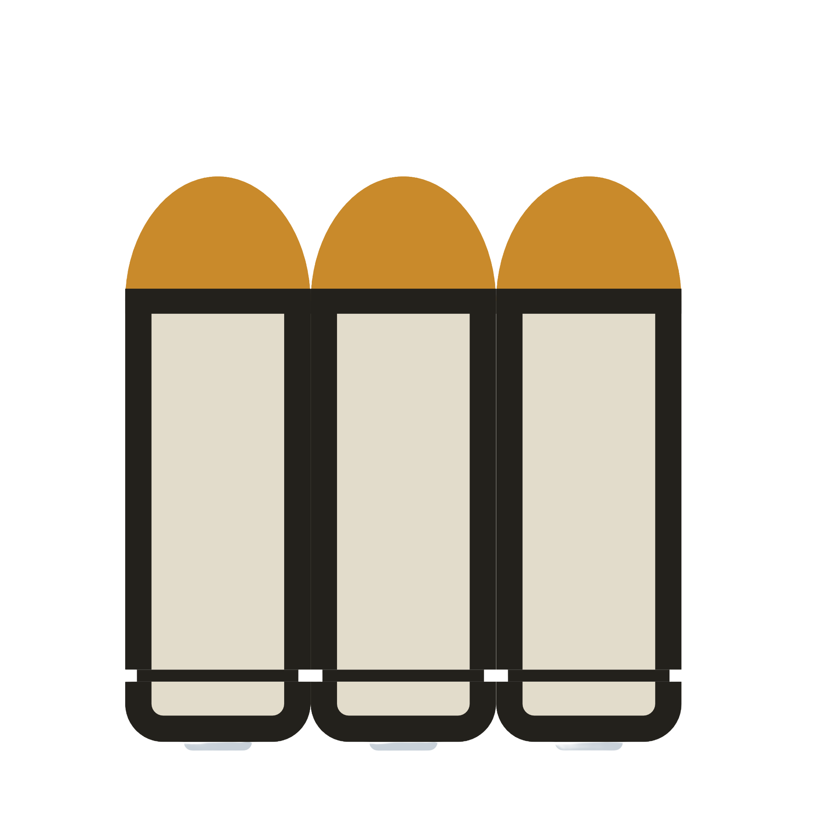

How to play
What is the goal of Another Tally?
The goal of Another Tally is to lead a group of survivors through a zombie apocalypse. You must manage resources, make strategic decisions, and keep your survivors alive as long as possible. Survive until the end to win the game, but can you make it that far?
You lose when no one is left. Survivors die when their health reaches 0, from hunger, thirst, injuries on scavenging trips, or the horde breaking through at night. A survivor whose morale drops to 0 gives up and leaves the group.
Please note that Another Tally is a turn-based game, and each turn represents a day in the life of your survivors. You will need to be carefully plan your actions and make the most of each day to ensure the survival of your group.
Additionally, the game only exists in the current browser tab's memory. If you refresh the page, close the tab, or open the game in a new tab, your current run will be lost. Make sure to finish your run before doing any of these actions!
Turns in the game.
-
The Dawn Report
In this window, you'll see the results of the previous night's events. Some mornings, something happens before the day starts and you'll have one more choice to make.
-
Day
During the day, you can assign survivors to tasks, manage resources, and make strategic decisions to keep your group alive.
-
Dusk
At dusk, scavengers come home with what they found (unless they're on a 2-day trip), the base produces food and water, construction moves forward, and the group eats and drinks. Going without food or water hurts.
-
Night
Every night brings an event you must answer. Then the horde attacks the walls, and your night defense decides whether they hold.
Resources
-
 Food
Food
Each survivor eats 1 food at dusk. A day without enough food raises everyone's hunger and lowers morale. At 80 hunger, survivors start losing health every day. Once built, the kitchen makes 2, 4 or 6 food a day depending on its tier. -
 Water
Water
Each survivor drinks 1 water at dusk. Running short costs everyone health right away, so water is the most urgent resource. Once built, the water collector gathers 2, 4 or 6 water a day depending on its tier. -
 Materials
Materials
Building and upgrading facilities costs materials. Nothing is built at the start, each tier costs more than the one before, and a Workshop makes every build cheaper. -
 Medicine
Medicine
A survivor on Heal uses 1 medicine to treat the most injured person. Without medicine, only a Medic can help, and only a little. -

Ammo
Ammo adds to your night defense (up to 10 counts). Each guard uses 1 ammo every night, so keep restocking.
Survivors and base
Each survivor has health, hunger, fatigue and morale, plus one skill and one trait. Every day, give each survivor one task on the Survivors tab.
On the Survivors tab every bar reads "full is good": hunger shows as Fed and fatigue as Rested. Bars turn amber, then red, as they run low. Under each survivor's task, a line says what that task will do today, and the Today panel flags anything that won't work before you end the day.
| Task | What it does |
|---|---|
| Rest | Lowers fatigue by 25 and raises morale by 5. Better Beds recover more, and an Infirmary also heals. |
| Scavenge | Brings back supplies from a location picked on the Map tab. Tiring and sometimes dangerous. |
| Build | Needed to start and finish upgrades. Each upgrade takes the number of days shown on its card. |
| Guard | Adds 5 night defense (10 for a Fighter) and uses ammo. |
| Cook | A Cook on this task saves 1 food at dusk. |
| Heal | Treats the most injured survivor using 1 medicine: +30 health for a Medic, +10 for anyone else. A Sick Bay adds 10 more, and a Field Hospital treats two people. |
Every task except Rest adds fatigue. A survivor at 80 fatigue or more is too tired to scavenge, guard or build, so plan rest days. Morale drops when food runs short and when someone dies.
Facilities at the base cover those needs. On every difficulty you start with nothing built, so the first days are about getting water, food and walls up. Each facility has three tiers. Building a tier is paid for up front in materials and only moves forward on days when a rested survivor is on Build. You can have more than one build going at once. A finished tier works from the next day.
Costs below are before discounts: a Builder on Build saves 2 materials, and a Workshop saves 1 to 3 more (never below 1).
| Facility | Tier 1 | Tier 2 | Tier 3 |
|---|---|---|---|
| Beds |
Salvaged Cots Rest recovers 35 fatigue. Sleeps 5. 3 materials, 1 day. |
Bunk Room Rest recovers 45 fatigue. Sleeps 7. 5 materials, 1 day. |
Barracks Rest recovers 55 fatigue and +10 morale. Sleeps 9. 8 materials, 2 days. |
| Kitchen and garden |
Camp Kitchen +2 food a day. 4 materials, 1 day. |
Kitchen Garden +4 food a day. 6 materials, 1 day. |
Greenhouse and Smokehouse +6 food a day. 9 materials, 2 days. |
| Water collector |
Basic Rain Catcher +2 water a day. 4 materials, 1 day. |
Rooftop Collection System +4 water a day. 6 materials, 2 days. |
Advanced Water Harvesting Network +6 water a day. 9 materials, 2 days. |
| Workshop |
Tool Bench Builds cost 1 less material. 3 materials, 1 day. |
Repair Shop Builds cost 2 less. Mechanics salvage +1 more. 6 materials, 1 day. |
Fabrication Shop Builds cost 3 less and take 1 day less. 9 materials, 2 days. |
| Infirmary |
First Aid Station Resting survivors heal +10 health at dusk. 4 materials, 1 day. |
Sick Bay Resting survivors heal +20. Heal treats +10 more. 7 materials, 2 days. |
Field Hospital Resting survivors heal +30. Heal treats two people. 10 materials, 2 days. |
| Walls and watchtower |
Scrap Barricades +10 night defense. 4 materials, 1 day. |
Palisade and Lookout +20 night defense. Shows the exact horde size. 7 materials, 2 days. |
Fortified Wall and Watchtower +30 night defense. Each guard adds +3 more. 10 materials, 2 days. |

Scavenging
Pick a location on the Map tab and send a survivor. They come back at dusk with the kinds of supplies listed for that place: the farm and supermarket have food and water, the police station has ammo and medicine, and the gas station and school have materials.
- Danger pays, and hurts. Each danger level adds to the haul, but also raises the chance your scavenger is attacked and how badly.
- Places run dry. Each trip to the same place finds a little less, down to half of a fresh haul.
- Trips are tiring. Every day of travel adds 20 fatigue.
- Long trips keep people away. The farm and the military checkpoint are 2 days away. A survivor sent there leaves at dusk and comes back at dusk the next day with 2 extra supplies. While they're away they can't be given a task, don't eat or drink from your stores, and are safe from whatever hits the shelter.
- The military checkpoint starts locked. Select it on the Map to cut through the fence with materials (half price with a Builder or Mechanic at the shelter), or keep scavenging: an event near the checkpoint can turn up a keycard.
New survivors
Your group can grow. Scavengers sometimes meet someone who wants to join, more often in places where people hide (the farm, the suburb and the school). Some events also bring people to your gate.
Every newcomer needs a free bed. You start with exactly enough beds for your group, so build the Beds facility to make room. Without a free bed, the stranger moves on. Newcomers arrive tired and a little hurt, with their own skill and trait, and everyone's morale rises a little when someone new joins.
Events
Every night brings one event, such as a stranger at the gate, a storm, raiders, or a fever in the shelter. Some only happen in the right situation: after someone came home from scavenging, while you have a free bed, or while the checkpoint is still locked. The same event never comes twice in a row.
Each event gives you a few choices. A choice can need a rested survivor with a certain skill, cost supplies, or start a mini-game. The line under each choice tells you what it needs and what it does: whether it's risky, brings supplies, changes morale, or lets someone join. Some mornings bring a smaller event before the day starts.
Night raids
Every night the horde tests your walls, and it grows a little bigger each night until the last one. The Base tab shows your night defense and roughly how big tonight's horde will be.
| Night defense comes from | Amount |
|---|---|
| Walls and watchtower | 10, 20 or 30 by tier (none until built) |
| Each rested survivor on Guard | 5 (Fighter 10, Night owl +5, Coward 0). +3 more each with the Fortified Wall and Watchtower |
| Ammo in stock | 1 per ammo, up to 10 (double with a Sharpshooter on Guard) |
If your defense is lower than the horde, it breaks through and injures a survivor. A big breach injures two, and can knock your walls back a tier. Once you build the Palisade and Lookout, you see the exact size of tonight's horde instead of an estimate.
Trading
Wandering traders pass by your shelter. Each one stays for two or three days, then moves on, and a different trader shows up a few days later. The Trade tab shows how long the current trader is staying, or roughly when the next one is due.
| Trader | Sells mostly | Pays extra for |
|---|---|---|
| Old Marguerite, general goods | Food, water, materials | Ammo |
| Rook, gun runner | Ammo, materials | Food and water |
| Doc Ines, field medic | Medicine, water | Materials |
| Abe Tanner, farmer | Food, water | Ammo and medicine |
- Build an offer. Pick what you want from the trader's side and what you'll give from yours. The bar shows when the trader will accept.
- Sell what they want. Items a trader wants are worth 50% more to them, marked "wanted" on your side.
- One trade a day. Put everything into one offer.
- Prices depend on difficulty. On Normal and Hard, traders ask for more than their goods are worth. A Negotiator in your group knocks 25% off what they ask.
Difficulty
Pick a difficulty and run length when you start a new game. Longer runs give the horde more nights to grow, and give you more nights to run out of supplies.
| Easy | Normal | Hard | |
|---|---|---|---|
| Starting supplies | Plenty | Some | Very few |
| Scavenging hauls | Full | Smaller | Smallest |
| Danger while scavenging | Low | Medium | High |
| Hunger and thirst damage | 10 a day | 15 a day | 20 a day |
| Trader prices | Fair | 15% extra | 30% extra |
| Days between traders | 2–3 | 3–4 | 4–6 |
| Auto-resolved mini-games won | 70% | 55% | 40% |
Skills and traits
Every survivor has one skill and one trait. Skills help with a task or unlock event choices; traits can help or hurt.
Skills
Traits
Mini-games
Some event within Another Tally can only be completed by playing a short mini-game. These mini-games can be turned off in Options to auto-resolve them instead.

Lockpick
Some loot is locked and requires a lockpick to open. This mini-game tests your dexterity and timing to open the lock.

Defense
Ammo is needed to hold off night raids. Improvements to the base can help, but you will still need to defend it.

Search
An important part of scavenging is finding supplies. This mini-game tests your ability to search effectively.
Controls
The game can be played with either a mouse or keyboard. The following table shows the controls for each input method.
| Action | Mouse | Keyboard |
|---|---|---|
| Move between controls | — | Tab |
| Switch game tabs | Click a tab | Left and Right arrows |
| Select | Click | Enter or Space |
| Pause | Pause button | Esc |
| Show text that's still typing | Click the text | — |